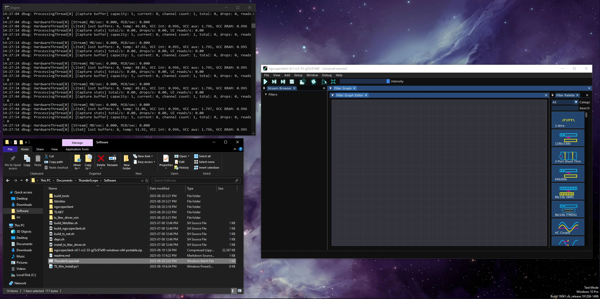
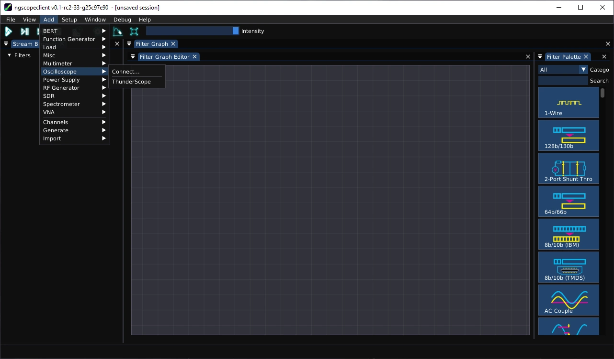
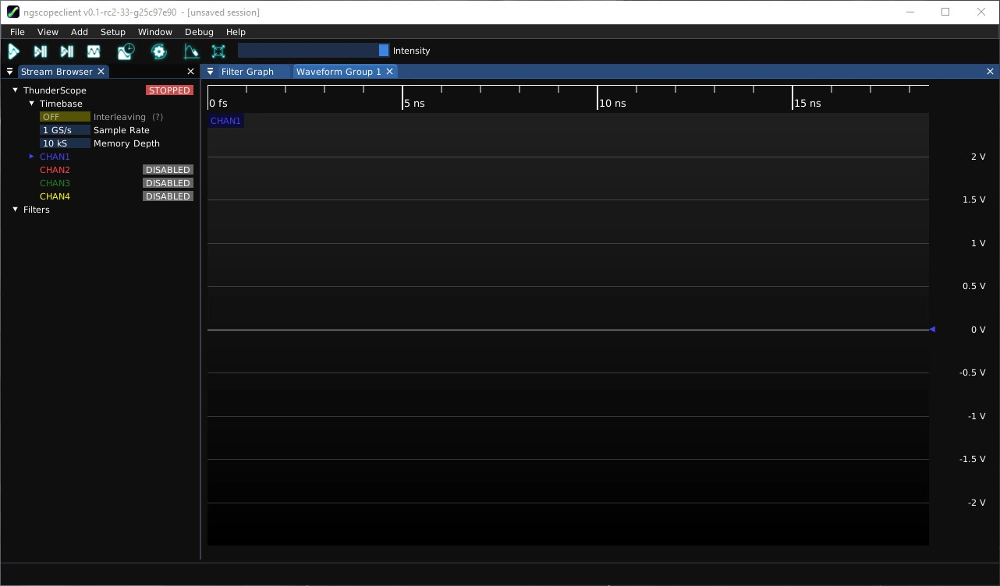
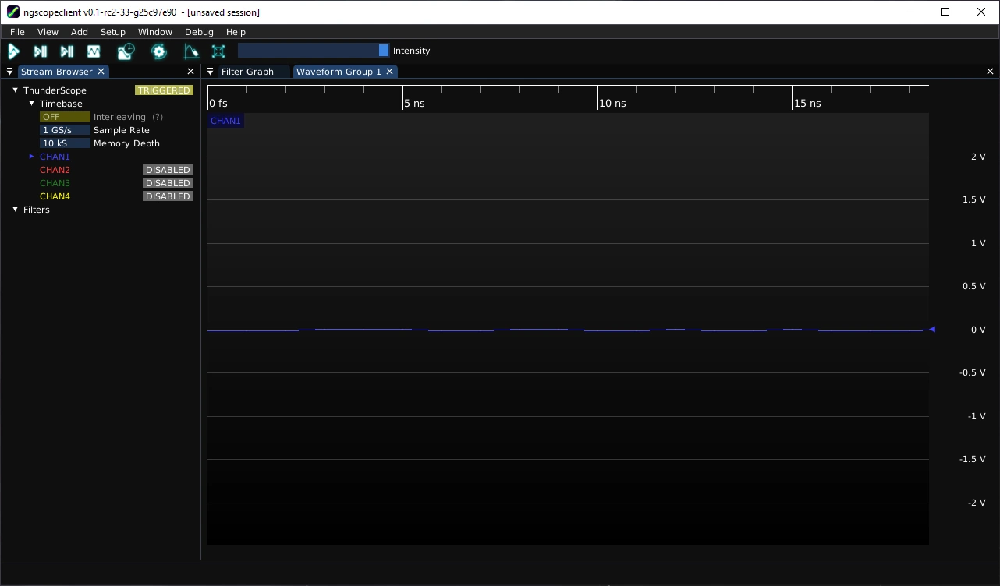

Getting Started#
Follow the instructions below to download and install the driver and software required to use ThunderScope.
This section needs to be written.
Run powershell as administrator and install git if needed:
$ winget install --id Git.Git --source winget
Clone the ThunderScope repo in the directory where you wish to install the software. For example, here it is installed in the root of the user directory.
$ cd $env:USERPROFILE
$ git clone https://github.com/EEVengers/ThunderScope.git
Navigate to the Software folder and run the install script
$ cd .\ThunderScope\Software\
$ powershell -ExecutionPolicy Bypass -File "TS_Win_Install.ps1"
When the script is finished executing, restart your computer. You will be prompted to install the driver when you log in after the reboot. Select “Install this driver software anyway”.
Todo
Add screencapture of driver install prompt
With ThunderScope connected, run ThunderScope.bat in the Software folder of the install directory. This should launch a terminal running the triggering software and an ngscopeclient window.
In the ngscopeclient window, select Add->Oscilliscope->ThunderScope
Once ThunderScope is added, you will see a blank waveform view
Click on the play button on the top left side of the window to start triggering and display a waveform
This section needs to be written.